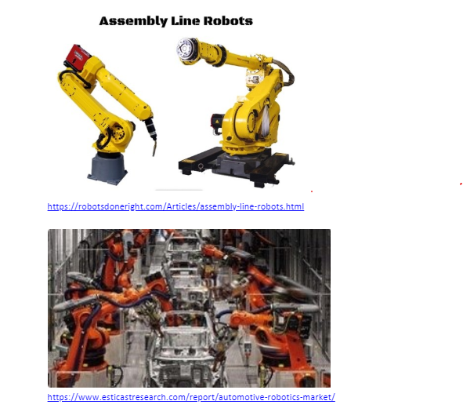
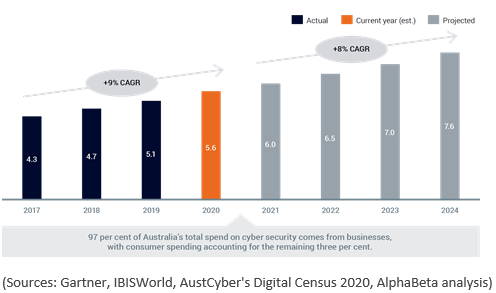
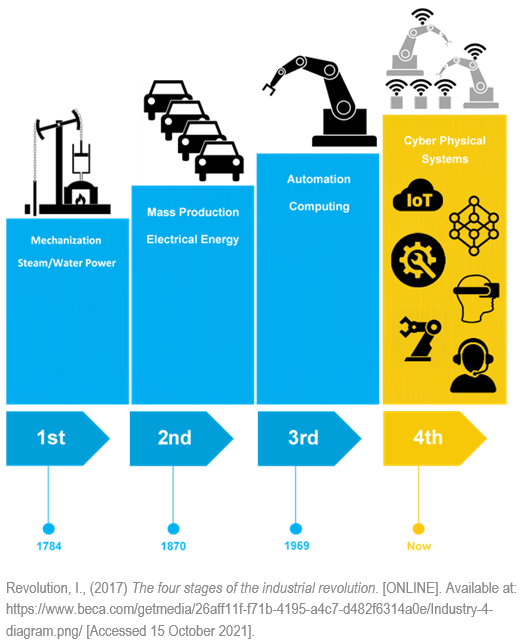
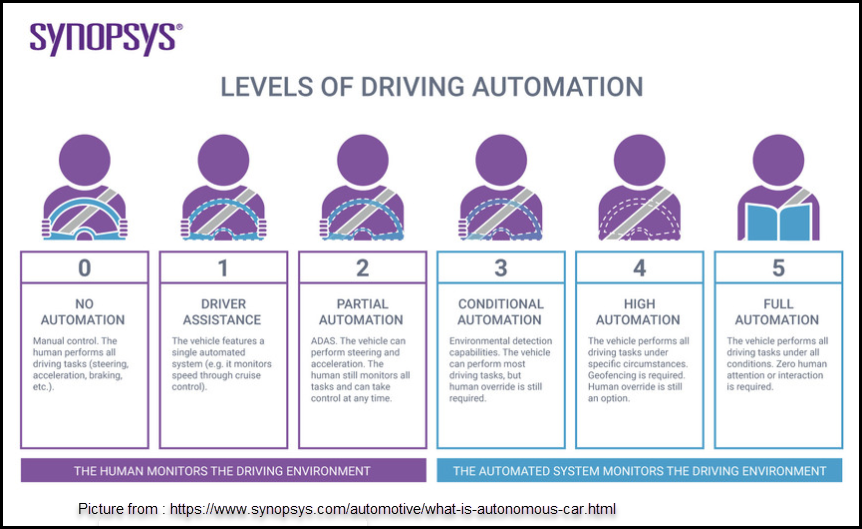

1. Robots
What do Robots do?
What is the state of the art? What are the newest developments in technology?Beginning during the 18th century’s industrial revolution, massive technological advancements were made. Poverty has been decreased to a greater extent in the last five decades than in the previous 50, according to UN estimates. That's because the global economy expanded sevenfold, with technology playing a key role. A modern Industrial revolution can occur again. In the 21st century, we are focused on making small, but useful, advancements that let us gets things done more efficiently. This streamlines our daily lives and reduces the workload of most industries.
What can be done now?The automotive industry includes the design, development, manufacturing, and selling of products. It is one of the most significant economic sectors, and robots play a big part in this. Currently, robots are easily set up and programmed, and seamlessly integrated into the automotive industry within factory assembly lines. Processes can be repeated without flaws. Unlike humans, they are prone to fewer mistakes, need less maintenance, and are more cost-effective. They can work in environments that are deemed unsafe for humans. On a smaller scale, many household robots have been introduced to make life easier, such as robotic vacuum cleaners.
 What can be done in the future? What current technology makes this possible?Humanoid robots are beginning to be implemented within healthcare, entertainment, and space exploration across the globe. They are a type of system that is designed to accurately replicate human interactions and movements. Some examples of this are Paro and Pepper. Paro, designed by Dr. Takanori Shibata, is a robot designed to assist caregivers and communicate with patients more efficiently to reduce stress. It runs on AI and alters its behaviour according to sound, temperature, and touch, labelled the therapeutic robot. Pepper, created by SoftBank Robotics, is a semi-humanoid robot that adjusts its behaviour based on surrounding people’s moods. Both robots use sensors to detect changes, which is becoming more and more prevalent in the robotics industry, beginning to be programmed to an almost human-like emotional intelligence.
In today’s market, fast courier services are essential for businesses to stay competitive. Delivery robots let companies have customer satisfaction, and even opens new options for service providers, such as Amazon, eBay, and major retailers. Especially with the rise of online shopping during the pandemic, this could help make transportation (gas, people wages) and shipping fees less expensive. Ways this can be done is through automated vehicles and drones.
The company Nuro has been working on autonomous on-road vehicles that are made to transport goods quickly and safely. Its exterior and interior is flexible, not limited to only one purpose. It can handle errands such as delivering groceries to picking up clothes. Zipline is a logistic company that operates a global autonomous delivery service that transports critical healthcare shipments to those who need it most. They transport vaccines, emergency medicine, and supplies, as well as integrating regular delivery services. Having flown almost 12 million miles to date, they are a supply chain industry that is constantly transforming the technology and medical world.
What is the likely impact of robots?
Will this create, replace, or make redundant (to dismiss) any current jobs or technologies?
Rapidly changing robots could dismiss assembly line and retail workers entirely. Driverless cars are going to replace taxi drivers most likely in the future. Tesla’s cars, for example, are integrated with an updating system, like the ones you would fine for an iOS or Android device. Their cars allow you to choose whether you want the new software installed. The software Assembly line robots can be programmed to put parts together, insert fine parts, like screws and pins, and can apply adhesives, such as glue. They are then able to perform employees’ jobs more precisely and efficiently, which leads to increased production of goods. According to economists at MIT and Boston University, robots could replace as many as 2 million manufacturing workers alone by 2025.
A great example of retail workers being replaced are the Amazon Go stores. They take advantage of checkout-free shopping that are enabled by computer vision and sensors. Their services connect with Amazon customers’ accounts which means it’s convenient and flexible.
More people will also gravitate towards the IT industry, as robots will require maintenance and will continue to evolve.
How will Robots affect us?
How will Robots affect us in our daily lives? How might this affect family members or friends?
In our daily lives, some tasks can become mundane. Robots, however, can effectively perform repetitive tasks without boredom. Eventually, robots will be able to read things for us, engage in conversation, clean, deliver things, prepare our medications, or even helping us recover if we fall, or can’t get up.
When robots are fully introduced, most of our domestic tasks would be completed by robots. Humans would become more lazy and more reliant on technology. Communication would also be an issue as you will lose time with your family, not having any face-to-face meetings. This could also result in our physical and mental health getting worse as we would engage less in physical exercise and contact with other people. It would be bad for our mental state if we were isolated from people all the time.
This is how robots can contribute to our future.
REFERENCES
- builtin.com. 2021. 36 Robotics Companies on the Forefront of Innovation. [ONLINE] Available at: https://builtin.com/robotics/robotics-companies-roundup. [Accessed 12 October 2021].
- analyticsinsight.net. 2021. Top 10 Robotic Innovations in 2021. [ONLINE] Available at: https://analyticsinsight.net/top-10-robotic-innovations-in-2021/. [Accessed 12 October 2021]
- time.com. 2021. Millions of Americans Have Lost Jobs in the Pandemic—And Robots and AI Are Replacing Them Faster Than Ever. [ONLINE] Available at: https://time.com/5876604/machines-jobs-coronavirus/. [Accessed 12 October 2021]
- robotsdoneright.com. 2021. Assembly Line Robots. [ONLINE] Available at: https://robotsdoneright.com/Articles/assembly-line-robots.html [Accessed 13 October 2021]
- northlinerobotworld.com. 2021. HOW ROBOTS HAVE CHANGED MODERN MANUFACTURING. [ONLINE] Available at: https://www.northlinerobotworld.com/about/blog/How-Robots-Have-Changed-Modern-Manufacturing_AE12.html. [Accessed 13 October 2021]
- justwalkout.com. 2021. Just Walk Out. [ONLINE] Available at: https://justwalkout.com/. [Accessed 13 October 2021]
- blog.robotiq.com. 2021. 10 Ways Robotics Could Transform Our Future. [ONLINE] Available at: https://blog.robotiq.com/10-ways-robotics-could-transform-our-future. [Accessed 14 October 2021]
2. CYBERSECURITY
What is Cybersecurity?
Cybersecurity is the practice of protecting data, networks, systems and programs from digital attacks, also known as cyber-attacks, which are usually aimed at accessing, destroying, changing sensitive information, extorting money from users, or interrupting normal business processes.
The recent COVID-19 pandemic pushed citizens to work from home, businesses and governments migrated to the Cloud, people relying more on the internet and smartphones to complete their daily obligations, because of that cyber-attacks are on the rise. A shortage of skilled staff is placing organizations at higher risks for data breaches, for the public sector of organizations the stakes are especially high, recent breaches have exposed private information on millions of citizens while compromising classified data and causing monetary loss. In 2020 the estimated cost of cybercrime to the world was about 1 trillion dollars, 50% more than what was predicted for 2018, also it’s more than 1% of the global GDP.
In Australia, the Cybersecurity market is expected to increase 9% per year, with Australians spending approximately $5.6 billion on cyber security in 2020 - from both local and international providers - a figure that is expected to increase to $7.6 billion by 2024.
A successful approach to cybersecurity has multiple layers of protection spread across the computers, networks, or data that one intends to keep safe. Each of these layers focuses on a specific area where malware could attack, and work together to tighten security and have a better chance of stopping intruders from breaching your network.
Some examples of protection layers include:
- Firewall/Unified Threat Management (UTM): Firewall stands as the main barrier between your network and cyberspace, it monitors incoming and outgoing network traffic and permits or blocks data packets based on a set of security rules.
- End Point/End User Protection: Antivirus software was originally developed to protect a computer from viruses, however with the proliferation of other malware, the next generation antivirus software started to protect from other computer threats, also available for mobile phones and tablets.
- Mobile device Management: Mobile workplaces and virtual offices are becoming the norm, it allows IT teams and administrators to control and distribute security policies to the mobile devices accessing sensitive corporate data in the organization, ensuring the corporate network is secure.
- Data backup: In case of any stolen, deleted or altered information, creating a backup can save you a lot of headaches.
- Security awareness/education: It's important to inform, train and prepare the people that work in businesses, to avoid basic mistakes that could cause losses to the Company like downloading a virus.
- Two-factor Authentication: The simplest most effective way users are who they say they are. When you type your password then it sends another temporary password to your mobile phone that you have to type as well.
- Virtual Private Network (VPN): Makes an encrypted connection between your PC and a VPN server. Your PC uses the VPN encrypted connection to navigate the internet, when you make a request it sends the information encrypted back to your PC. Making it impossible for someone to see your request or the data you received.
Some of the technologies that are improving for security or have chances of being implemented in Cybersecurity soon are AI and Deep Learning, Mobile security, Cloud Technology security, IoT security and Blockchain.
AI and Deep Learning is a double edge sword that can be used as a security solution or as a weapon by hackers. AI has been used by hackers to create smart malware and launch attacks that bypass the latest security protocols in controlling data. On the other hand, AI applied to Cybersecurity can predict new attacks and notify administrators of data breaches instantly. AI can currently be used to build automated security systems, natural language processing, face detection, automatic threat detection.
Cybersecurity being automated with AI, in the next few years, is a way to keep up with the market demand and lack of qualified security experts.
An example is ‘DarkTrace’ (https://www.darktrace.com/en) an autonomous Cyber AI algorithm that in seconds can scan and interrupt in-progress cyberattacks, including ransomware, email phishing, threats to cloud environments and critical infrastructure.
Mobile is the new target because most people rely on a smartphone to complete their daily tasks like internet banking, email, social security, keep up and update their social media, work-related tasks, read the news, take personal photos. Mobile phones are a potential prospect for hackers. Developments towards smartphones security will be needed to match up the need for personal safety.
Cloud technology with the latest advancements, making it more viable for businesses to migrate to the Cloud. The future indicating large amounts of data being transferred in and out of the cloud, and we will become more vulnerable to attacks. Hackers will have more opportunities to steal or disrupt all of that data being transferred. Cyber Security measures need to be implemented and updated regularly within the cloud providers.
The IoT (Internet of Things) with 5G network means even more operations and devices will be interconnected, being 5G architecture is still effectively new and requires a lot of research to find loopholes to make the system secure from external attacks, cybersecurity will have to keep developing and updating as this technology moves forward. Also, manufacturers will need to be very strict in building sophisticated 5G hardware and software to control data breaches.
Blockchain the rise of cryptocurrencies is an indication that this technology will be used every time more. If developed, utilized correctly and implemented into the information security landscape, it could revolutionize it. Some experts say this could be the future of Cybersecurity.
Blockchain encryption in theory is mathematically impossible to crack, and it has inbuilt security that when hacked instantly detects it.
What is the likely impact?
The likely impact is that cybersecurity will be an important subject in the IT industry, where professionals will have to learn and develop new solutions along with the new risen technologies. The potential impact is that Companies, Banks, Cloud Providers and Governments will have to spend billions to keep their cybersecurity up to date, also the evolution of information security will be essential to keep up with the rising number of threats. There will likely be always a possibility of data breaches that cost organizations billions or expose personal information or malware that could destroy personal data or cause financial harm to individuals. Cybersecurity professionals could be in shortage in the near future, considering the market today needs more professionals. The implementation of AI and Deep learning into the information security landscape, if successful, could have a good impact and help to keep up with the demands.
How will this affect us?
We will live in a world where its people are more aware of Cybersecurity, this means we could look up and search how to keep our data safe often, where we could invest money in software that could keep us safer, also where expert advice will be needed to keep us updated to the latest security trends, so we don't fall for the latest cyber scams. The only people who are not much affected are people who don’t use technology, but the way globalization is evolving people who don't rely upon technology will be a rarity. The way the Financial Institutions, Governments and Organizations are migrating to digital, could affect us all in the future. When we rely mostly on digital data, for example, our bank account balances, if one day we wake up and everyone's account is $0 it could create major chaos in our society, the security of this data is crucial to our society even for keeping peace and order.
REFERENCES
- Parachute. 2021. 2021 Cyber Attack Statistics, Data, and Trends. [ONLINE] Available at: https://parachutetechs.com/2021-cyber-attack-statistics-data-and-trends/. [Accessed 12 October 2021].
- YouTube. 2019. Access the future: Blockchain in Cybersecurity - Round-Table Discussion. [ONLINE] Available at: https://www.youtube.com/watch?v=HTjQXfqU5kM&ab_channel=PECB. [Accessed 12 October 2021].
- AustCyber. 2020. SCP - Chapter 1 - The Australian cyber security sector today. [ONLINE] Available at: https://www.austcyber.com/resources/sector-competitiveness-plan/chapter1. [Accessed 11 October 2021].
- YouTube. 2019. What Is Cyber security?. [ONLINE] Available at: https://www.youtube.com/watch?v=shQEXpUwaIY&ab_channel=MurdochUniversity. [Accessed 10 October 2021].
- CISCO. 2021. What Is Cybersecurity?. [ONLINE] Available at: https://www.cisco.com/c/en_au/products/security/what-is-cybersecurity.html. [Accessed 10 October 2021].
- Pro source. 2021. What is Layered Security & How Does it Defend Your Network?. [ONLINE] Available at: https://blog.totalprosource.com/what-is-layered-security-how-does-it-defend-your-network. [Accessed 10 October 2021].
- SSI. 2021. What are the 5 Layers of Security?. [ONLINE] Available at: https://insider.ssi-net.com/insights/what-are-the-5-layers-of-security. [Accessed 10 October 2021].
- Incognito Forensic Foundation. 2020. The 5 Latest Cyber Security Technologies for Your Business. [ONLINE] Available at: https://ifflab.org/the-5-latest-cyber-security-technologies-for-your-business/. [Accessed 10 October 2021].
- Simplilearn. 2021. Top 10 cyber security trends for 2021. [ONLINE] Available at: https://www.simplilearn.com/top-cybersecurity-trends-article#8_targeted_ransomware. [Accessed 10 October 2021].
3. MACHINE LEARNING
What is Machine Learning?
Computers are incredible at storing, organizing, fetching and processing huge volumes of data. But what if we could use computers not just to fetch data, but to actually make decisions about data? This is the essence of machine learning – algorithms that give computers the ability to learn from data, and then make predictions and decisions.
Machine learning algorithms build a mathematical model based on sample data, known as "training data", to make predictions or decisions without being explicitly programmed to do so.
There are different approaches to Machine Learning and these are the main methods used today:
Supervised Machine Learning: you need a “supervisor” to map between inputs and outputs, it will adjust its weights until the model has been fitted appropriately. This method is defined by its use of labelled datasets to train algorithms into classifying data or predicting outcomes accurately.
Unsupervised Machine Learning: You feed the algorithm unlabelled datasets which analyse the data and can cluster or label it. The algorithm discovers hidden patterns or data groups without the need for a human intervention "supervisor". Unsupervised learning is great to discover similarities and differences in information.
Today is used as an ideal solution for exploratory data analysis, cross-selling strategies and image pattern recognition
Reinforcement Machine Learning: This is a behavioural model, similar to the supervised learning model, but instead of training the algorithm using sample data, this mode learns by trial and error using feedback from its actions and experiences the program discovers the correct behaviour.
- Image recognition: The neural network can analyse pictures to detect objects, features and recognize faces. This technology has been used for photo tagging in social media, radiology imaging in healthcare, and self-driven cars.
- Social media analysis: It recognises words and understands the context behind them, monitoring users.
- Video surveillance: This system learns how to spot human figures and scans for physical threats.
- Optimization of search engines: Algorithms look for user habits, analysing the search contents.
- Cybersecurity: Algorithms can immediately recognize cybersecurity threats, analyse similar cases and take measures to keep users or websites safe.
- Speech recognition: A capability that uses natural language process (NLP) to process human speech into a written format, many mobile devices incorporate it into their systems to conduct voice search (e.g. Siri)
- Automated stock trading: Designed to optimize stock portfolios, these platforms make thousands even millions of trades per day without human intervention.
In the near future, we will see clear Machine Learning innovations within most of our production, health, entertainment and distribution industries, some examples are as follows:
The Healthcare and Medical Industry:
The covid-19 pandemic has highlighted the significance of investing and optimizing the healthcare industry and its systems. This is one of the most promising technologies in the world today, with machine learning healthcare providers can generate extensive volumes of data for making insightful deep clinical decisions. ML is also used to assist the discovery of new drugs, reducing the time for discovery, helping the industry to save a lot of costs, also helping systems to deal with healthcare delivery to boost its quality under reduced costs. In the future experts predict ML to be an indispensable component of healthcare clinical trials.
Entertainment and the media industry:
Machine learning emerged to be crucial for the entertainSment and media industry, even more with the covid-19 pandemic. Improved recommendations engines for delivering services, as well as predictive modelling for future demands can be anticipated so the industry can make sound investments with better knowledge.
Retail and commerce:
More changes that will affect our near future are the chances in the conventional way we do retail and commerce. We had a bit of a taste of what will be like with the interruption of conventional commerce practices due to the pandemic. There are now machine learning applications for almost every area of e-commerce operations, from inventory management to customer experience.
The manufacturing industry:
Industrial IoT has inundated this industry, ‘smart’ machinery that sends data about how things or people are performing to a central IoT platform here you can see diagnostics and make necessary changes to improve performance or prevent problems, and in the near future, it will only expand.
ML will become a building block for the whole industry along with the connectivity of data, automation, error detection in real-time, tracking of assets, visibility of supply chains and warehouse efficiency. Machine learning will boost efficiency, innovation and reduce costs.
Agriculture:
IoT-enabled Agricultural sensors and real-time data for algorithms increase agricultural efficiencies, improve crop yields and reduce food production costs. According to the UN, the world's population will increase by 2 billion by 2050, requiring a 60% increase in food production. An example is using AI and machine learning-based surveillance systems to monitor every crop field's real-time video feeds identifies animal or human breaches, sending an alert immediately
What is the likely impact?
Machine learning will likely revolutionize the world as we know it, affecting the whole manufacturing chain, from the crops “being planted” to the manufacturing and to our doorstep “being delivered”. Some experts say Machine learning and AI are starting the 4th industrial revolution.
Machine learning will likely make redundant repetitive jobs that don't require a high level of social or emotional intelligence, eventually some of the jobs we know today will disappear. The World Economic Forum reported that 85 million jobs will be replaced by Machine Learning and automation by 2025, but don't worry the good news are that 97 million new jobs will be created due to AI by 2025.
How will this affect us?
The differences that we will have from today in a few years are we will be surrounded by technology, using smart apps for most of our daily tasks, instead of human interactions like we had pre-covid-19 pandemic.
Healthcare and the medical industry have the potential to get better, cheaper and faster with more accurate diagnostics; also cures and medicines will get discovered and developed faster. Due to ML integrated into most of our production lines, prices are likely to go down, also smart monitoring of the market and people needs, where algorithms detect shortages before it happens, will give more time in planning ahead, making the market resourceful.
Image recognition integrated with surveillance will most likely drive crime rates down, algorithms can detect crime before it happens as well as to detect when people require help and notify authorities.
REFERENCES
- Udacity. 2021. Why AI Will Replace Some Jobs and Others Will Stick Around. [ONLINE] Available at: https://www.udacity.com/blog/2021/02/why-ai-will-replace-some-jobs-and-others-will-stick-around.html. [Accessed 15 October 2021].
- Forbes. 2021. 10 Ways AI Has The Potential To Improve Agriculture In 2021. [ONLINE] Available at: https://www.forbes.com/sites/louiscolumbus/2021/02/17/10-ways-ai-has-the-potential-to-improve-agriculture-in-2021/?sh=62f0f9af7f3b. [Accessed 15 October 2021].
- SparkCognition. (2021). How Machine Learning will Change Manufacturing.. [Online Video]. 14 October 2021. Available from: https://www.youtube.com/watch?v=7PPm4t26ZQo&ab_channel=SparkCognition. [Accessed: 14 October 2021].
- UIC. 2021. Machine Learning in Healthcare: Examples, Tips & Resources for Implementing into Your Care Practice. [ONLINE] Available at: https://healthinformatics.uic.edu/blog/machine-learning-in-healthcare/. [Accessed 14 October 2021].
- Bigcommerce. 2021. Ecommerce Machine Learning: AI’s Role in the Future of Online Shopping. [ONLINE] Available at: https://www.bigcommerce.com.au/blog/ecommerce-machine-learning/#conclusion. [Accessed 14 October 2021].
- IBM. 2020. Supervised vs. Unsupervised Learning: What’s the Difference?. [ONLINE] Available at: https://www.ibm.com/cloud/blog/supervised-vs-unsupervised-learning. [Accessed 14 October 2021].
- Wikipedia. 2021. Machine learning. [ONLINE] Available at: https://en.wikipedia.org/wiki/Machine_learning. [Accessed 14 October 2021].
- YouTube. 2020. 10 APPLICATIONS OF MACHINE LEARNING. [ONLINE] Available at: https://www.youtube.com/watch?v=me3QEYPsFWE&ab_channel=Jelvix. [Accessed 14 October 2021].
- IBM. 2020. What is Machine Learning?. [ONLINE] Available at: https://www.ibm.com/cloud/learn/machine-learning. [Accessed 11 October 2021].
- learnwoo. 2020. 5 Industries Most Likely To Transform With Machine Learning In 2021. [ONLINE] Available at: https://learnwoo.com/machine-learning/. [Accessed 14 October 2021].
4. AUTONOMOUS VEHICLES
What does it do?
An autonomous vehicle is one that operates itself performing the necessary functions that a human would generally perform with the aid of sensors and artificial intelligence. This concept has been there for a long time beginning in the aircraft industry with autopilot where the controls of a plane are taken over by computers to keep the aircraft in its path. Autonomous trains have also been configured to run between stations and mine sites moving people and goods. Cruise control, blind spot detection in cars, lane overstepping and overspeed alarms are some basic types of automation already available in most vehicles today.
The Society of Automotive Engineers (SAE) currently defines six levels of driving automation. The beginning level is where the human being has full control over the vehicles to a slow increase in shift to fully moving the control to the automation built into the vehicle. 
To achieve complete shift of control from human to the automation built in the vehicle has have the smarts to sense its surroundings and maintain a safe path to its destination. Autonomous vehicles use sensors, mapping software, GPS tracking, electronics, software, machine learning and computers to chart out a route, and instruct the cars to perform tasks such as accelerate, steer, brake and stop. Hard coded rules, visual cameras to identify obstacles, modelling and object recognition help these vehicles to follow traffic rules and prevent collisions.
Autonomous vehicles are also used in Mining Operations where large heavy mining Haul Trucks laden with over three hundred tonnes of Iron Ore move from the bottom of the pit to the top with out drivers. This has various advantages over human driven trucks as the decision making is quicker due to the ability of the computing system to process data much quicker. These vehicles move a large payload each trip and hence the speed at which they run, the brake applications and the gradients of the ramp they drive on all has a bearing on the life of components and the fuel burnt by the engines. Hence optimising this with given conditions is very important. It also improves safety where in human do not have to be exposed to high-risk routes with interaction between heavy mobile equipment and the presence of fibrous materials and excessive heat conditions.
Innovations in Autonomous Vehicles
There are various levels of automation already in use in most vehicles in the market. Toyota Hilux a few years ago introduced a camera on their bumper bars to identify speed signs and allow the vehicle to alert the driver of over speeding. This meant that mapping software did not need to be updated if the road speed were updated.
Some of the innovations taking Autonomous vehicles to the next level are as follows:
- Deep Reinforcement Learning (DRL): This is a subfield of machine learning that combines reinforcement learning and deep learning to resolve complex reasoning and computing. DRL has been used in robotics and games to carryout basic household tasks using robots. DRL also provides manufacturers insights into automation technologies and vehicle maintenance such as predicting component life.
- Path Planning: The success of the autonomous vehicles, to some degree depends on the reduction in the number of collisions and interactions with humans (near misses etc.). To achieve better target in this space, the vehicles must choose a path that is efficient to move from place A to place B. Using mapping applications, weather conditions, traffic conditions a safer route can be charted to reduce the impact of accidents and unfavourable interactions of other vehicles and pedestrians. Knowing the speed of the other objects that may come in close proximity such as pedestrian or adjacent cars that could come within close proximity, these can be fed into various machine learning models to predict outcome and memorise them for future events that arise.
- SLAM: Simultaneous localization and mapping is a technology used to operate a vehicle in real time surroundings where mapping is not available. Constant connection to GPS tracking and re-imaging the position of the vehicle, the AI can chart a map of the movements of the vehicle thereby updating the maps for that area for future.
- HD Maps: High-definition maps with technology to work out lane markings, road curves, gradients etc can be used to predict how the vehicle will be travelling in real time.
While currently there has been some trials done to completely move to full automation there has been very low success due to the trade off with cost, safety and funding. Tesla, Ford, Volvo, Apple, and Google are few companies testing autonomous cars.
Given the focus on climate change and the road safety, this technology will become more popular in the next 2-to-5-year timeline. Vehicle emissions can be reduced, peak hour traffic congestions can be reduced, accidents due to human behaviours reduced. Transport companies would not need drivers to drive across states away from families. At the current moment with COVID, we can see the spread of the virus between states has been through the transport drivers moving across borders. This could be avoided.
School pick up and drop off can be scheduled while parents are working, thus providing a safer mode of transport for children.
Road accidents with young teens could be avoided to some extent with autonomous vehicles.
Impact of Autonomous Vehicles
There are various impacts the move to autonomous vehicles will bring about. The chart below from McKinsey & Company shows the progress of the self-driving vehicle revolution over the next 30 years. Below are some of the areas of impact:
- Insurance: it is going to a shift in insurance premiums due to the reduction in driver-based accidents. Hence insurance companies would need to consider how the revenue generation to keep their business profitable. Legal questions would also arise on how claim is disputed. Questions like who is responsible, i.e., the manufacturer that had a fault in the AI or machine learning or was it the owner that programmed it incorrectly.
- Road improvements: would play an important factor in this as there could be designated lanes for various speeds or types of vehicles. Optimised driving could lead to better roads and less emissions. Point to point drop off service would mean quick transit times for most employees. Reduction in traffic accidents will have a social and economic savings also. Driver fatigue over long travels would be reduced thereby reducing stress and fatigue.
- Car Pooling/sharing would become more widely used and hence reduce the requirements to own vehicles reducing total cost of ownership and the requirements for charging vehicles and garaging. Workplace parking would be reduced as vehicles could quite easily perform drop off and pickup.
- Affordability: as autonomous vehicles become more affordable, there will be a shift in the transport of personnel industry. The reliance on taxis and rideshares will decrease. Farm equipment and public transport vehicles would replace drivers with autonomous vehicles there by increasing unemployment. Trucking and freight companies would also be in the same situation.
- Maintability: due to machine learning and predictive real time analysis, there would be less maintenance required on the vehicles thereby reducing the trades required for servicing and maintaining the vehicles.
- Safety: of passengers could be compromised if vehicles were target of suspicious tampering of software or hacked. This would need some serious consideration on what security is setup to avoid hacking.
- Road Rules: most of the road rules and regulation are based on human drivers, and these will have to be carefully replaced with new drafted rules. This is an extensive exercise and would take considerable time to first understand the behaviour and then come out with scenarios that would need regulations drafted.
Ethical concerns such as how to program complex situations where a choice must be made to save a pedestrian against the vehicle passenger, other vehicles coming rapidly in blind spots or proximity. Autonomous vehicles must judge risk versus reward. Dr Nicholas Evans, an assistant professor of philosophy at University of Massachusetts Lowell, mentions that self-driving cars are, for now mostly risk averse. He and his team are working on constructing risk-reward scenarios. The question also arises that would we trust our car to take the correct decision and how long would it be for us to gain this trust.
How does this affect us?
We can be assured that regardless of the cons of autonomous vehicles, they will take over the market share of vehicles in the next 20 to 30 years. We must adapt to these changes and commence skilling ourselves into this technology. AI and machine learning is slowly becoming a key part of day-to-day life and hence having the insight into what this is and how it works will have to be learnt by us and our younger generation. Recharting a path when the vehicle is not taking you where you need to go is one example. There will be challenges as you travel between towns from cities where mapping and GPS tracking may not be available or updated version available.
Our daily commute to work has may have been through public transport, may not affect at all. But travelling up the country to various camp sites and towns as a hobby will be affected if towns, we need to visit do not have vehicle charging or places where my autonomous vehicle can be repaired if necessary. For some of us that have been driving vehicles for many decades with a good driving record, you may feel the safest when you are at the wheel as you know the decisions you make are more geared towards your safety and the safety of the passengers. Putting this decision making towards a machine that you cannot control or see does not give a large assurance now. Also, while on the road, looking at other drivers and their behaviours you can make judgement on where you need to be in relation to them. Given there is no visual contact in the autonomous vehicles you cannot be sure what the other vehicle is going to be doing.
The other major contributing factor is the economic side of things. Autonomous vehicles are expensive compared to the general vehicles. Without subsidies, it becomes a burden to dispose out your current vehicle at low prices and invest in new vehicles at an inflated price. There would need to be incentives by the government to make the shift towards this technology. In conclusion, the decision to move to autonomous vehicles for myself would be purely based on the economic modelling, return on investment and the result of standardised ethically sound rules scripted for the decision making for these vehicles.
REFERENCES
- What is an Autonomous Vehicle? - TWI . 2021. What is an Autonomous Vehicle? - TWI . [ONLINE] Available at: https://www.twi-global.com/technical-knowledge/faqs/what-is-an-autonomous-vehicle. [Accessed 12 October 2021].
- What is an Autonomous Car? – How Self-Driving Cars Work | Synopsys. 2021. What is an Autonomous Car? – How Self-Driving Cars Work | Synopsys. [ONLINE] Available at: https://www.synopsys.com/automotive/what-is-autonomous-car.html. [Accessed 12 October 2021].
- EnterpriseAI. 2021. Four Innovations Taking Autonomous Vehicle AI to the Next Level. [ONLINE] Available at: https://www.enterpriseai.news/2020/07/06/4-innovations-taking-autonomous-vehicle-ai-to-the-next-level/#:~:text=Four%20Innovations%20Taking%20Autonomous%20Vehicle%20AI%20to%20the,routes.%203%20SLAM.%20...%204%20HD%20Maps.%20. [Accessed 12 October 2021].
- New Cars Toyota Australia: Prices, Service Centres, Dealers, Test Drives. 2021. Road Sign Assist | Toyota Safety Sense | Toyota AU. [ONLINE] Available at: https://www.toyota.com.au/toyota-safety-sense/road-sign-assist. [Accessed 12 October 2021].
- Pacific Training Group. 2021. Autonomous Vehicles in Driving Innovation - Pacific Training Group. [ONLINE] Available at: https://pacifictraining.edu.au/sustainability/autonomous-vehicles-in-driving-innovation/. [Accessed 12 October 2021].
- 6. Risky driving among Australian teens | Growing Up in Australia. 2021. 6. Risky driving among Australian teens | Growing Up in Australia. [ONLINE] Available at: https://growingupinaustralia.gov.au/research-findings/annual-statistical-reports-2018/risky-driving-among-australian-teens. [Accessed 12 October 2021].
- McKinsey & Company. 2021. Ten ways autonomous driving could redefine the automotive world | McKinsey. [ONLINE] Available at: https://www.mckinsey.com/industries/automotive-and-assembly/our-insights/ten-ways-autonomous-driving-could-redefine-the-automotive-world. [Accessed 12 October 2021].
- Driverless cars and the 5 ethical questions on risk, safety and trust we still need to answer - ABC News. 2021. Driverless cars and the 5 ethical questions on risk, safety and trust we still need to answer - ABC News. [ONLINE] Available at: https://www.abc.net.au/news/science/2018-03-21/self-driving-autonomous-cars-five-ethical-questions/9567986. [Accessed 12 October 2021].